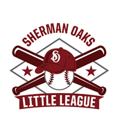

SAN FERNANDO VALLEY RADIO
sfv.fm
Berry Drive, Studio City, California
On the Air
Tuning the picture…
Channel: 2 Freeways · 4 Huell Howser · 7 Aquarium
| Sound off The station is on the air. Turn the sound on to join the program in progress. |
Host: Buddy Sepulveda Next break: — Conditions: — |
This broadcast is brought to you by
Northridge, since 1967. The black pastrami Reuben. |
Ventura Boulevard, since 1972. The original pita wrap. |
Since 1955. Everything for the game, on the Boulevard. |
Oxnard Street, Van Nuys, since 1965. Burgers off the grill. |
North Hollywood, since 1958. The Valley's oldest tiki bar. |
North Hollywood, since 1962. The Valley's surf shop. |
 Sherman Oaks, since 1952. Play ball. |
Today's Programs
| When Sam is on | Live from Berry Drive. Records from the garage, whenever the transmitter is on. The recorded program is off the air for now. |
San Fernando Valley Radio is live from Berry Drive whenever Sam is on the air. The television has three channels. Channel 2 is a California Department of Transportation camera on a Valley freeway: live video where your browser can reach it, a still refreshed every minute where it cannot. Channel 4 is Huell Howser, by way of the Huell Howser Archives at Chapman University, which keeps his programs and the player they play in. Channel 7 is the Monterey Bay Aquarium, live. Press 2, 4 or 7.
Copyright © 2026 Sugarman Ltd.